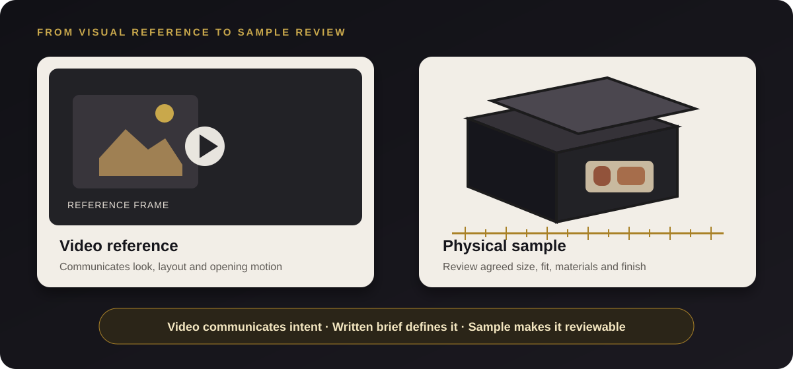
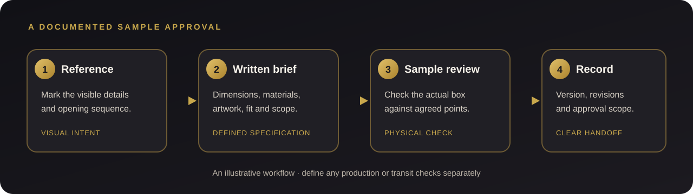

Why a Reference Video Is Not a Packaging Sample
Turn a visual example into a clear box specification, a useful prototype review and an approval record your production team can follow.
A video can make a packaging idea easier to explain than a short text message. It may show how a magnetic flap opens, how a lid sits, or how a brand mark catches the light. The difficulty begins when the moving image is treated as a complete manufacturing specification. A camera angle, lighting, scale and edits can hide important construction details, and a screen cannot tell you how a finished box feels or fits the products inside.

The buyer inquiry: recreate a magnetic box from a video
An anonymized German buyer shared a video of a premium-style magnetic gift box and asked about reproducing its look. The request touched the box shape and closure, materials and color, logo placement, embossing, foil details and insert. Before considering a larger order, the buyer wanted a physical sample and separate information about the sample, production and delivered cost.
Those are connected questions, but they are not all answered by the same reference. A video helps the buyer and supplier discuss the visual direction. A written brief makes the choices measurable. A physical sample lets both sides review the agreed construction and finish in hand.
Case note: This example is based on an anonymized buyer inquiry. It describes the questions raised and does not claim that an order was placed, a design was approved, or production was completed.
What a reference video can—and cannot—show
Use a reference clip to identify the parts that matter to the buyer. Pause it at useful moments and note the opening direction, lid movement, visible proportions, logo position and any detail that should be discussed. If the video includes a hand or familiar object, treat it only as a rough visual cue unless its size is known.
The video is not reliable evidence for exact dimensions, board grade or thickness, wrap material, insert material, color under controlled conditions, foil type, embossing depth, edge quality, magnet strength, product clearances or the consistency of a production run. Perspective and lighting can make these look different from the actual object. Ask the buyer to mark uncertain details rather than silently estimating them from the screen.
| Reference source | Useful for | Do not treat it as proof of |
|---|---|---|
| Video or photos | Visual direction, opening sequence, approximate layout, reference details to discuss. | Exact scale, material specification, color match, fit, finish quality or production consistency. |
| Written brief and drawing | Dimensions, structure, materials, artwork, tolerances and decisions the sample should demonstrate. | How the made sample actually feels, closes, fits or looks under real viewing conditions. |
| Physical sample | The construction and agreed features present on that particular sample. | Every future production unit or parcel’s transit performance unless separate checks are defined. |
Translate the video into a sample brief
Before requesting a prototype, convert the visual reference into a short list that a designer and buyer can both review. Keep confirmed choices separate from questions still awaiting a decision.
- Box structure and opening: state whether the target is a magnetic flap, lid-and-base or another construction. Describe which panel opens, the direction of movement and any visible hinge or wrap detail.
- Finished dimensions: provide target outside dimensions and, more importantly, the usable inside space needed for the packed products. Mark units and note which measurement is still provisional.
- Product and insert: list the items that will go inside, their packed dimensions and orientation. Identify fragile surfaces, accessories or cards, and show the intended arrangement. For a custom insert, see our custom box insert guide.
- Materials and surface: name the material choices that need to be quoted or compared, including wrap, lining and insert where relevant. Avoid inferring a board or fabric type from a video appearance alone.
- Color and branding: provide the logo artwork and its intended placement. Describe foil, embossing, debossing, printing or other details separately. Attach a brand reference if color matters and state how it will be reviewed.
- Closure and use: explain what the buyer expects when opening and closing the box. Note if the video shows a particular movement or presentation sequence that should be represented in the sample.
- Order and delivery scope: state quantity range and destination, then ask for sample charges, production pricing and delivery charges to be shown as distinct quote items with their assumptions.
For a fuller list of dimensions, artwork and order details to assemble, use our packaging brief checklist. If a requirement is not yet known, label it as open. That gives the supplier a chance to clarify it before the sample is made.

What to check on the physical sample
Review the sample against the written brief and reference points, not from memory. If the product will sit inside the box, use the actual product or an agreed representative sample so the fit and arrangement can be checked.
Sample review checklist
- Compare overall proportions and finished dimensions with the agreed drawing.
- Open and close the box several times; note alignment and closure action.
- Check inside clearance and the arrangement of every product and insert.
- Inspect edges, corners, wrap joins and visible surface finish.
- Review logo position, scale and orientation against the approved artwork.
- Check foil or embossing under normal viewing light and by touch where appropriate.
- Confirm the selected color reference and note the review conditions.
- Record every difference from the reference that is accepted, revised or unresolved.
- Label the reviewed sample or drawing with a version and date.
Color on a monitor is only a visual reference. If a particular brand color matters, agree on a suitable physical color reference and record how the sample is being compared. If the prototype uses substitute materials or omits an effect, mark that clearly so the buyer does not mistake it for a finished production standard.
Create an approval record before production
When revisions are needed, list them in one place and tie them to the relevant drawing or sample version. A concise approval note can identify the box dimensions, structure, materials, finish, logo artwork, insert layout, quantity assumptions and any open items. It should also say which sample or proof the buyer is approving.
Keep sample costs, production prices and delivery estimates visible as separate quote lines. Ask the supplier to state what each amount includes, the quantity basis and any assumptions about packing or destination. A sample approval does not automatically change the commercial scope or approve details that were not represented on that sample.
A physical sample is one check of the particular prototype. It does not alone establish that every production unit will match or that a parcel will withstand every shipping route. If production inspection criteria or transit testing matter, define the sample size, acceptance points and test conditions separately before the order proceeds.
Common mistakes when using a packaging video
- Estimating scale from perspective. Ask for target dimensions and product measurements instead of scaling from a camera frame.
- Calling visual similarity a specification. Write down materials, construction, artwork and finish as separate decisions.
- Approving the empty box only. Check the intended contents, insert and accessories in place.
- Leaving revisions in chat fragments. Consolidate changes and associate them with one versioned drawing or sample.
- Assuming the prototype proves transit performance. Define shipping tests separately when the project requires them.
Frequently asked questions
Can a manufacturer make a box exactly like the one in my video?
A video can communicate a direction, but it may not reveal exact dimensions, materials, tolerances or how the package was made. Share the clip with a written brief, identify the visible details you want to reproduce, and confirm feasibility and any differences with a physical sample.
What should I send with a packaging reference video?
Send the product list and dimensions, target box size if known, quantity range, delivery destination, logo artwork and the details you want to match. Mark assumptions and undecided items clearly. Ask for sample, production and delivery costs to be itemized.
Does approving a sample mean mass production will be identical?
The sample records the agreed design direction and lets you inspect that prototype. Ask the supplier to document the specification and any quality criteria that will apply to production; the sample alone does not prove every unit will be identical.
Can photos or video replace shipping tests?
Photos and video can document appearance or a handling step. They do not replace an agreed transit test when one is required. Define the packed configuration, route or test method and acceptance criteria for the specific project.
Turn your reference into a reviewable sample
For the German buyer inquiry, the video gave the team a starting visual direction, while the requested physical sample was the next step for reviewing the box structure, closure, branding and insert together. A useful brief can make that review more focused by stating what must match, what may vary and what remains undecided.
If you have a packaging reference video, share it with product dimensions, quantity range, destination, logo files and the features you want reviewed. Crown Win can help organize these into a custom packaging brief and sample discussion.
Planning a custom magnetic gift box? Include the reference clip and a list of details to check. Ask for the sample scope, production quotation and delivered-cost assumptions to be stated separately.